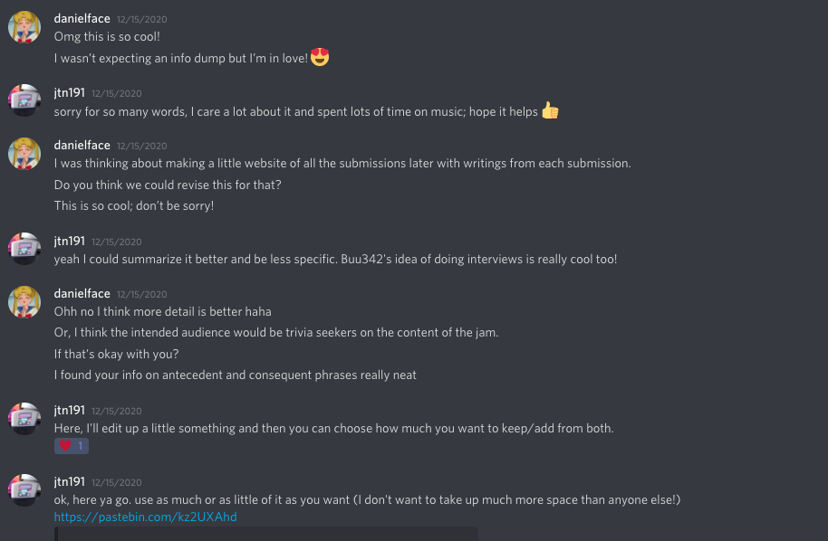

Fireside DMs with jtn191
Origin story of this webstie

jtn191's notes
I went to school for music (audio engineering) but have gotten more into making music for game jams since then as a creative outlet. I like that I can do it any time and collaborate with people anywhere. I have especially fond memories of the Sega Genesis and N64.
Every jam I do, I try to better fit the setting of the game and make stronger compositions. I had a tendency to make short, simple loops and I always have the goal of breaking out of that. For a few stretches, I made myself come up with at least one song idea every day.
Check out the soundtrack here:
https://jeffnichter.bandcamp.com/album/telocation-gemini-original-soundtrack
There's little homages and references throughout the soundtrack:
- the last chord of the logo jingle is basically the same as the Windows 95 startup sound. It's one of my favorite sounds ever and I'm a big fan of Brian Eno.
- Dark Suns: I think it sounds sort of John Willams/Star Wars-like. I love learning about music theory and looking to it for inspiration when you're stuck or need some guidelines. The Lydian mode is used really often for optimistic, space-like music (see Yoda's Theme, Grant Kirkhope's space world music in Yooka Laylee). I wish I took composition classes in college; learned more about "antecedent and consequent phrases" to better develop this one. It's like grammar and making a sentence.
- Cosmic Dust is my favorite. The hook came from an idea I shelved a while back and the rest of it felt like a "Eureka" when it came to me. I'm a big fan of Tchaikovsky and Grant Kirkhope and I'm sure they had an effect on this one.
- track 4 was originally the Robot Theme and it was was what I thought a lonely robot in space would sound like. The background music came later because it was boring.
- Reduced Gravity was the last finished. Not sure if it ended up in the game. It came from a piano exercise I was working on, learned and applied in a different pattern; I feel like patterns or practicing something difficult are good places to start songs. It uses a "circle of fifths" progression which sounds really classic and kind of wandering. (see Stevie Wonder's Isn't She Lovely, Autumn Leaves etc)
- Thermal Imaging came from music jamming with strangers over the internet. You get lots of good, spontaneous things come from jamming.
- Aurora Borealis was something I had written earlier as a synthwave song. I'm really inspired by the music one of my friends, Baldocaster, makes. But I think it sounds like a sense of awe and David Wise.
- I think Steps Across the Sky is weaker; it came from doing a Lydian space thing and moving it around in patterns. spiced up with a really different drum loop(edited)
Main technical challenges were learning (in DAW) how to switch MIDI channels for a track (drums are always 10), how to make program/bank change events-- should always begin a midi file (they designate which instrument it is; if not, they're piano by default). All organizational/house keeping things. These steps are typically the last and once I learned how, I didn't worry about it until the music was done. My programmer made me a tool called midiplayer2.0 that makes a ROM from a MIDI file and opens it in an emulator so you can make sure that it all works. That's the last step before sending MIDI to my programmer
Random tips and habits working on this one:
- walk like twice a day--outside--morning and evening, if you're not that active otherwise--especially if you're stuck on something.
- when composing, get in a playful mindset. Play around with notes and intervals like you would scrabble letters or word games. Don't get too fixed on anything. Everything can be changed to be better
- change rooms, instruments, pianos if you get stuck on something. Travel, go somewhere else familiar.
- save everything and go back to it later. it's easier to judge yourself when you're farther from it. Put good pieces together later.
- if something's stale, try using contrasting drum loops, accompaniment
Back to the Telocation Gemini page